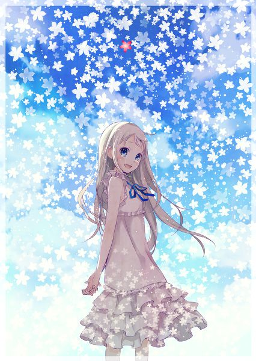
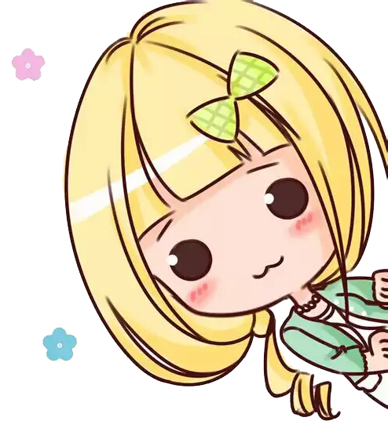

首页
动漫点评
图片分享
音乐分享
首页
>>
动漫简评
>>列表
有马公生的母亲一心想把公生培育成举世闻名的钢琴家，而公生也不负母亲的期望，在念小学时就赢得许多钢琴比赛的大奖。11岁的秋天，公生的母亲过世，从此他再也听不见自己弹奏的钢琴声，沮丧的他也只好放弃演奏，但在14岁那年，经由儿时玩伴的介绍，公生认识了小提琴手宫园薰，并被薰的自由奔放吸引，没想到薰竟开口邀请公生在比赛时担任她的伴奏…
作者 2017-06-17
??????

从小时候起一直青梅竹马的6人，却在升上高中之后彼此有了距离。不太与人们接触的主角宿海仁太、有点被小太妹熏染的安城鸣子、进入重点高中的松雪集与鹤见知利子、放弃读高中而展开旅行的久川铁道、只有幼年死去的本间芽衣子（灵魂，只有仁太能看见）还是一如从前。有一天，芽衣子对仁太说：“帮我实现一个愿望吧”.
作者 2017-06-17
??????
《一拳超人》讲述的是主人公埼玉原本是一名整日奔波于求职的普通人。3年之前的一天偶然遇到了要对淘气少年下杀手的异变螃蟹人后，回忆起年少年时“想要成为英雄”的梦想，最终拼尽全力救下了淘气少年。重拾对于成为英雄的兴趣之后，通过拼命锻炼，埼玉终于脱胎换骨获得了最强的力量，但同时失去了头发成了光头，似乎还失去了某些感情。
作者 2017-06-17
??????
正当源静香总算答应了野比大雄的求婚的时候，任务完成的哆啦A梦却被完成程式要求，要在48小时内回到22世纪。难道，得到了什么，自然的，也会失去些什么这个命定的预言，没办法被哆啦A梦跟野比大雄突破。面对哆啦A梦即将离开的冲击，野比大雄又该如何自处。
作者 2017-06-17
??????
上一页
1
2
……
3
4
下一页
Re:make-ONE OK RACK
Angel With A Shotgun
Butter-Fly
万神纪-星辰
Blessing
DenonsDragons
The Beginning
灵魂的号哭
奇迹再现
MyDearest

©2017One动漫